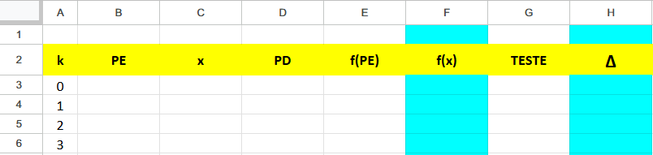
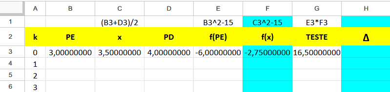
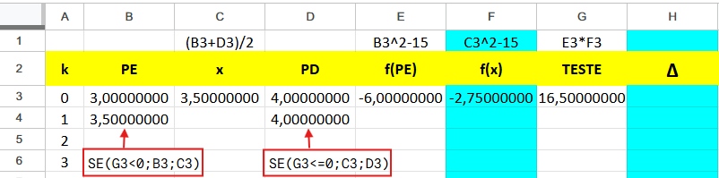
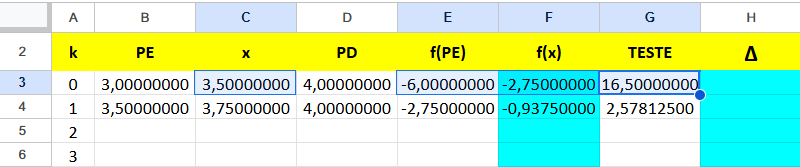
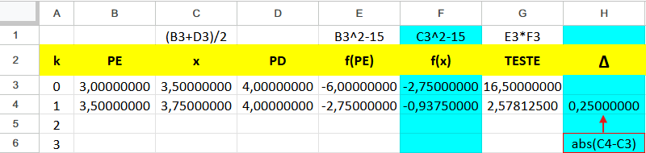
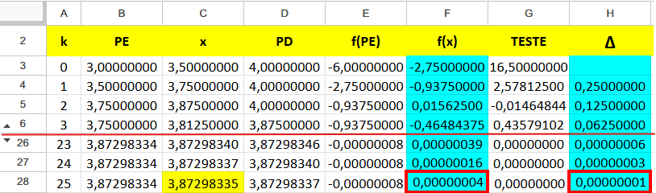

Cálculo Numérico Modular
1 Zeros de Funções
Neste capítulo trataremos de métodos para resolver equações. E como toda equação pode ser escrita por
\[f(x)=0\]
este assunto também é dito Zeros de Funções. Trataremos aqui de métodos que resolve equações que satisfazem algumas poucas condições. Mas essa restrição não invalida o esforço do estudo pois é grande a variedade de equações que podem ser resolvidos pelos métodos apresentados. Começamos definindo o zero de uma função.
Seja \(f\) uma função e \(r\in Dom(f)\) um elemento no domínio de \(f\). Este é dito um zero ou raíz da função se e somente se \[f(r)=0.\]
Alguns exemplos de zeros de funções podemos ver na tabela abaixo.
| função | zero |
|---|---|
| \(f_1(x)=x^2-5x+3\) | 0,6972243623 |
| \(f_2(x)=-x^3-4x+3\) | 0,6735930582 |
| \(f_3(x)=\sqrt{x}-5e^{-x}\) | 1,43044508899 |
| \(f_4(x)=e^x+x\) | -0,56714329040 |
| \(f_5(x)=x lnx-1\) | 1,76322283304 |
A função quadrática \(f_{1}(x)\) pode ser resolvida pela fórmula de Bháskara \[x=\frac{-b\pm \sqrt{b^2-4ac}}{2a}\]
que fornece a resposta diretamente. A função cúbica \(f_{2}(x)\) pode ser resolvida pela fórmula de Tartáglia, mas as demais funções dessa lista não possuem fórmula alguma. Então como calcular os raízes delas ? Até funções polinômiais de ordem maior que 4 não há fórmulas de resolução. Dessa forma como se podemos resolver uma equação como \[x^5+2x^2-x=0 ?\]
Neste capítulo, vamos aprender a resolver essa e outras equações que não possuem fórmulas prontas de resolução.
Os métodos que aprenderemos aqui são chamados de Métodos Iterativos. Isso por conta das iterações ou rodadas que fazemos para melhorar (ou refinar) cada vez mais a raíz da equação. Raíz de uma equação é a solução do problema em questão.
Diferentemente do Método Direto ou Analítico que usa uma fórmula como a de Bháskara para resolver uma equação de 2º grau. Essa fórmula nos fornece as raízes diretamente.
Métodos Iterativos são úteis para resolver equações que não possuem fórmulas de resolução. E elas são, na verdade, a maioria. Para determinar a raiz da equação pelo método iterativo existem algumas etapas que devemos percorrer, a saber :
Definir a precisão de conta.
Dar um chute inicial.
Escolher um Método de Refinamento.
Escolher um ou mais Critérios de Parada.
Executar o processo até satisfazer todos os critérios de Parada adotados.
As quatro primeiras etapas normalmente são fornecidas no enunciado da questão, embora isso não seja uma regra. Já a quinta etapa é a parte que o aluno precisa fazer. É nesta etapa que o aluno será avaliado.
1.1 Precisão
A precisão da conta é para definir a proximidade em relação à raiz. Suponhamos que a raiz seja \(r=3,135104\). Consideremos os seguintes números
\[\left\{\begin{matrix} a_1 = 3,135199\\ a_2 = 3,135098 \end{matrix}\right.\]
cujas diferenças em módulo em relação a r são, respectivamente
\[\begin{array}{c}|a_{1}-r|=0,000095<10^{-4}\\|a_{2}-r|=0,000006<10^{-5}\end{array}.\]
Dizemos que a precisão de \(a_{1}\) é de \(\varepsilon=10^{-4}\) e a de \(a_{2}\) é de \(\varepsilon=10^{-5}\), portanto \(a_{2}\) é mais próxima à raiz e por isso é um resultado melhor. Entretanto, não confunda a precisão com o número de casas decimais corretas. Observe que \(a_{1}\) tem as primeiras 4 casas decimais corretas ao passo que \(a_{2}\) apenas 3, embora seja um resultado melhor
\[\begin{array}{c}a_{1}=3,\underline{1351}99\\a_{2}=3,\underline{135}098\end{array}.\]
Outra maneira de se referir à precisão é dizer que \(a_{1}\) tem precisão de 4 casas decimais e \(a_{2}\) tem a precisão de 5 casas decimais. Isso tem a ver com o número de zeros na diferença para o valor correto e não com o número de decimais corretas. Mas há casos em que o enunciado pede justamente isso: decimais corretas até a \(n\)-ésima casa. Por isso deve-se sempre prestar atenção no enunciado do problema! Quando se pede isso, o exemplo acima nos dá uma ideia do que fazer : aumentar a precisão em algumas casas decimais. Nesse exemplo vimos que \(a_{2}\) tem a precisão de 5 casas, pois, \(\varepsilon=10^{-5}\), mas acerta apenas as 3 primeiras casas decimais. Se o enunciado pedir 4 corretas, temos que trabalhar com uma precisão maior, talvez \(\varepsilon=10^{-6}\). Mas, dependendo do dígito da \(n\)-ésima casa, muitas vezes a precisão de \(n\) casas já é suficiente. Veja no exemplo acima onde \(a_{1}\) tem precisão de 4 casas e acertando as 4 decimais iniciais. Em geral, uma precisão de \(n+1\) casas já serve para acertar as \(n\) decimais iniciais. Mas isso nem sempre acontece. Quando há a presença de zeros no valor exato, por exemplo, pode dar problemas. Vejamos um exemplo. Suponhamos que o valor correto seja \[r=3,121002.\] Com a precisão de 5 casas e obtemos os seguintes resultados \[\begin{array}{c}a_{1}=3,\underline{12}0993\\a_{2}=3,\underline{1210}10\\a_{3}=3,\underline{12100}9\end{array}\] Verifique que todos têm a mesma precisão de \(\varepsilon=10^{-5}\) mas os números \(a_{1},a_{2},a_{3}\) acertam, respectivamente, duas, quatro e cinco casas decimais. Uma observação a fazer aqui é a seguinte: quando se pede n decimais corretas, não significa qualquer decimais mas sempre as primeiras decimais a partir da vírgula.
1.2 Chute Inicial
Caso o valor inicial não seja fornecido, você mesmo deve fazer esse chute. Depois, é só rodar o programa e veja se ele converge para algum ponto fixo. Esse ponto fixo será a raiz do problema. Um bom chute inicial faz o processo convergir para algum lugar. Esse lugar que falamos é um valor cujo processo modifica muito pouco os seus dígitos, talvez só na décima primeira casa decimal. Por isso o chamamos de ponto fixo.
Mas, como podemos saber se o chute inicial que fizemos foi bom ou não ? Essa é uma boa pergunta. Normalmente se você começar por um ponto mais ou menos próximo à raiz, será um bom chute. Mas pode acontecer que o chute não seja tão perto da raiz, mesmo assim converge para um ponto fixo. Então não se preocupe muito com isso. Basta você rodar o programa e ver se converge. Se não convergir, tente outro chute e recomece o processo.
1.3 Método de Refinamento
A segunda etapa é escolher um método de refinamento. Esse método por vezes também é uma exigência do professor/examinador. Mas quando não é fornecido ou não é exigido, você pode escolher qualquer um dos métodos ensinados e aprendidos.
1.4 Critérios de Parada
Neste texto vamos usar dois critérios de parada, um para cada variável. Por que isso ? Lembramos que estamos trabalhando com duas variáveis, \(x\) e \(y\), a segunda dependente da primeira, ou seja \(y=f(x)\). Dizemos que \(y\) é a imagem de \(x\) e que \(x\) é abscissa de \(y\). Também se diz de \(y\) como ordenada de \(x\) e \(x\) como pré-imagem de \(y\). Lembrando que, uma raiz de \(f\) é um valor \(x=r\) tal que \(y=f(r)=0\). Assim queremos achar um valor da variável \(x\) determinado pelo valor 0 da outra variável: \(y\). Quem pode-me garantir que um valor próximo à raiz tem imagem próxima de zero ? Veja por exemplo a função
\[f(x)=5000x^2-300\]
cuja raíz positiva é \(r=0,24495\). O valor \(a=0,244\) é bastante próxima à raiz com precisão de \(0,00095<\varepsilon=10^{-3}\) mas a imagem dele é longe de zero, pois \(f(a)=-2,32\) . Na verdade, qualquer função cujo gráfico é quase vertical na raiz vai dar esse problema.

Dessa forma, vamos adotar dois critérios de parada. Para a variável x devemos garantir que
\[|x-r|<\varepsilon\]
e para a variável \(y=f(x)\) vamos adotar o critério
\[|f(x)|<\varepsilon\] e usaremos a mesma precisão para ambos os critérios. Mas observe que há um grande problema no primeiro critério de parada, pois não sabemos o valor exato de \(r\). Justamente esse valor de \(r\) que estamos procurando. Portanto precisamos trocá-lo por outro critério tangível. Há duas formas de fazer isso. O primeiro deles é calcular a melhora dos passos da sequência de iterações (também chamado de erro absoluto). \[|x_{i}-x_{i+1}|<\varepsilon\]
A segunda maneira é calcular a “porcentagem” de melhora desses passos ou mais precisamente a taxa de melhora dos passos (também chamado de erro relativo), dada por
\[\left|\frac{x_{i}-x_{i+1}}{x_{i+1}}\right|<\varepsilon\]
Essa segunda fórmula é mais sensível a erros, pois em nenhum momento a sequência de iterações pode atingir o valor zero. Pois senão estaríamos dividindo por zero. Aliás, essa também é a razão porque se coloca \(x_{i+1}\) no denominador, e não \(x_{i}\), pois na maioria das vezes o valor inicial que adotamos é o zero. Se assim for, o processo já começa com problema.
Diante do exposto vamos adotar o critério de melhora dos passos para garantir a aproximação da abscissa x à raiz em questão.
Um terceiro critério de parada seria o número máximo de iterações. Existem casos em que o processo de refinamento não converge para nenhum lugar. Nesses casos nenhum dos critérios anteriores serão satisfeitos, mas o processo precisa parar de alguma forma. Para isso pode-se adotar o número máxima de iterações como outro critério de parada. Isso é necessário quando o processo é implementado em um sistema automático, como em computador. Quando o processo é executado manualmente o número máximo de iterações não deve ser muito alto, talvez no máximo uma dúzia de iterações ou próximo disso. Hoje em dia com o recurso do computador esse número máximo pode ser um milhão ou mais. Mas neste caso o problema passa a ser o esforço humano. Acredito que ninguém vai fazer um milhão de rodadas a não ser que saiba automatizar esse processo. Para isso você deve saber e usar uma linguagem de programação, o que complica mais o aprendizado. Mesmo assim, acredito que se um processo atingir um milhão de rodadas … muito provavelmente ele não vai convergir a lugar nenhum. Então porque raios devemos executar tantas rodadas ? Como disse antes, se você rodar e depois de umas cinquenta rodadas, ou até menos, ele não atinge um ponto fixo .. você deve começar a desconfiar que o processo não converge. Neste caso, descarte tudo e comece novamente com outro chute inicial. Simples assim. Por este motivo também que não vamos adotar esse terceiro critério de parada.
1.5 Execução do Processo
A fase de execução do processo é aquela que o aluno precisa mostrar na prova/exame. Neste texto a execução do processo não será feita manualmente e nem tampouco automaticamente. Vamos implementar sim em um computador mas o processo não será executado automaticamente, mas sim iteração por iteração. Por isso mesmo não vamos precisar impor o número máximo de iterações como um critério de parada. Vamos avaliar a continuidade do processo ou não a cada nova iteração.
A execução do processo será feita no computador usando softwares específicos. No caso de zeros de funções, assunto deste capítulo, vamos usar uma planilha eletrônica tais como Excel, Calc, Google Planilhas ou Geogebra. Cada iteração corresponde a uma linha da planilha.
No capítulo 2, quando falamos de ajuste de curvas, vamos usar o Matlab, Scilab, Octave ou Geogebra. Mas nesse capítulo o processo não será iterativo, senão analítico. Uma única iteração basta para resolver o problema.
No capítulo 3, falamos de Interpolação Polinomial. Nele vamos usar o software Geogebra e o processo também não será iterativo.
No capítulo 4. abordaremos a Integração Numérica, e voltaremos a usar uma planilha eletrônica. Mas o processo também não será iterativo.
No capítulo 5 passaremos a abordar Sistemas Lineares e vamos voltar a usar uma planilha eletrônica. Nesse capítulo o processo será iterativo.
Então vamos começar com o primeiro método iterativo numérico.
1.6 Método da Bissecção
Este método consiste em refinar intervalos que chamamos aqui de intervalos de bolzano. Cada iteração corta o intervalo pela metade, mas de forma que a propriedade da presença da raiz seja preservada. Nessa sequência de cortes, uma hora o tamanho do intervalo e consequentemente os candidatos à raiz será menor do que um valor ɛ previamente definido. Vamos começar apresentando o Teorema de Bolzano.
Seja \(f\) uma função contínua num intervalo fechado \([a,b]\) talque \(f(a)f(b)<0\). Então \(f\) possui uma raiz no intervalo \([a,b]\).
O intervalo fechado significa que ele é delimitado pelas suas extremidades : \(a\) e \(b\). Consequentemente, o gráfico da função também tem extremidades. O teorema garante que se a função é contínua e as extremidades do gráfico estão em lados opostos do eixo x, então o gráfico cruza o eixo x em algum ponto do intervalo.
Sejam dados um intervalo inicial de Bolzano \(I_{0}=[a_{0},b_{0}]\) e uma precisão ɛ. O primeiro candidato à raiz é o seu ponto médio
\[x_{0}=\frac{a_{0}+b_{0}}{2}\] que divide o intervalo \(I_{0}\) em duas metades. Se o ponto médio não for a raíz então ela deve estar em uma das metades, conforme diz o Teorema. A metade que mantêm a propriedade de Bolzano, ou seja as extremidades do gráfico em lados opostos, será o novo intervalo de Bolzano \(I_{1}\), cujo tamanho é a metade do anterior.
Repete-se esse procedimento até satisfazer os critérios de parada ou o ponto médio acertar a raíz. Os critérios de parada que usaremos são
\[|f(x_{i})|<\varepsilon\] e \[|x_{i+1}-x_{i}|<\varepsilon.\]
O segundo critério, passo menor que \(\varepsilon\), pode ser trocado por: intervalo \(\left|I_{i+1}\right|<\varepsilon\). Lembrando que \(x_{i}\) é uma das extremidades do intervalo \(I_{i+1}\) e \(x_{i+1}\) é o seu ponto médio. Por isso o tamanho do intervalo \(I_{i+1}\) é exatamente o dobro do passo \(|x_{i+1}-x_{i}|\).
Na Figura Figure fig-SeqInt vemos uma ilustração do Método da Bissecção, que consiste em uma sequência de Intervalos de Bolzano cada vez menores mas sempre contendo a raiz da função f. O intervalo seguinte será sempre a metade do atual e o ponto de corte é o seu ponto médio. A estimativa para a raíz em cada intervalo é esse ponto médio.
Esse método da Bissecção em formato de algoritmo pode ser visto abaixo. A sua implementação pode ser feita em uma planilha eletrônica. Visando favorecer a legibilidade de informações, porém, adotamos uma precisão específica, tomada aleatoriamente, de 3 casas decimais e escolher o subintervalo à esquerda do ponto médio para testar a condição de Bolzano. Uma alternativa para fazer o teste de Bolzano seria o subintervalo à direita do ponto médio.
Para implementar esse algoritmo usaremos uma planilha eletrônica seguindo os seguintes passos.
Dada uma função \(f(x)\) contínua em \([a,b]\) talque \(f(a)f(b)<0\).
- Declaração das variáveis:
- k (índice de iteração)
- ε (precisão de contas)
- PE (Ponta-Esquerda do Intervalo)
- PD (Ponta-Direita do Intervalo)
- x (Ponto de Corte)
- f(PE) (a imagem do PE)
- f(x) (a imagem do Ponto de Corte)
- Teste (Teste de Bolzano)
- ∆ (Passo)
- Entrada de valores/fórmulas:
- k = 0 (índice 0 para valores iniciais)
- \(ε = 10^3\) (precisão adotada)
- PE = a
- PD = b
- x = (PE+PD)/2
- f(PE) (a imagem do PE)
- f(x) (a imagem do x)
- Teste = f(PE) f(x)
- Refinamento
- NovoPE = Se(Teste<0, PE, x)
- NovoPD = Se(Teste<=0, x, PD)
- ∆ = \(abs(x_{1}-x_{0})\)
Três observações a fazer. Primeiro, a razão de incluir 0 no Teste do NovoPD é forçar que o novo intervalo seja [x,x], tendo assim comprimento zero quando o ponto de corte, x, é o próprio zero da função. Com isso o processo terminaria. Segundo, para o Passo ∆ usamos o comando \(abs(x_{1}-x_{0})\) que fornece o valor absoluto da diferença entre os primeiros pontos médios. Por essa razão ele só pode ser definido a partir da primeira iteração. Terceiro, na implementação em alguma planilha eletrônica, não deve ser colocado os valores de cada variável, mas os respectivos endereços na planilha.
Em planilha eletrônica o cabeçalho terá o seguinte aspecto

As colunas F e H, em cor azulada, são os critérios de parada que adotamos \[\begin{array}{ccc} \left|f(x)\right|<\varepsilon & , & \Delta<\varepsilon\end{array}\] onde \(\Delta=\left|x_{i+1}-x_{i}\right|\) medem os passos da melhora no processo de aproximação ao zero da função. Quanto menor o passo, mais perto estamos da raíz. Essas colunas azuladas devem ser monitoradas para decidir se prosseguimos ou paramos com as iterações.Vamos entender melhor apresentando um exemplo.
Exemplo 1. Método da Bissecção, ache o valor de \(\sqrt{15}\) com precisão de 7 casas decimais corretas.
Resolução. Três passos iniciais precisam ser trilhados. O primeiro é definir a função a zerar. Várias funções têm $$ como raíz, mas a mais simples delas talvez seja \[f(x)=x^{2}-15\] que é a que vamos adotar. Em seguida, vamos definir o intervalo inicial de Bolzano. Como \[\underbrace{\sqrt{9}}_{3}<\sqrt{15}<\underbrace{\sqrt{16}}_{4}\] vamos adotar \(I_{0}=[3,4]\). Por fim, como o enunciado pede 7 casas decimais corretas, portanto $^{-7}$, vamos trabalhar com 8 casas decimais, pensando que esta última casa decimal pode resultar de um arredondamento, portanto imprecisa. A primeira linha ficaria assim

Na segunda linha faremos a 1ª iteração e começaremos com o processo de refinamento do Ponta Esquerda PE, na B4, e do Ponta Direita PD, na D4.

As células C4, E4, F4 e G4 serão cópias das C3, E3, F3 e G3, respectivamente.

Finalmente completamos a linha 2 com o primeiro passo.

Feita a primeira iteração, as demais repetem o processo de refinamento. Assim copiamos a linha 2 para as linhas abaixo e prestar atenção nas colunas azuladas. Depois de 25 iterações obtemos o quadro da Figura abaixo

Observe que \[\begin{array}{c} \mbox{F}28\,=\,0,00000004\,<0,0000001=\varepsilon\\ \mbox{H}28\,=\,0,00000001\,<0,0000001=\varepsilon \end{array}.\]
Devemos assim monitorar as colunas azuladas para que os 7 primeiros dígitos depois da vírgula sejam todos zeros. O resultado é o último ponto médio, portanto \[x_{28}=\boldsymbol{3,8729833}\] lembrando que o último dígito, 5, pode ser resultado de arredondamento, portanto não é preciso.